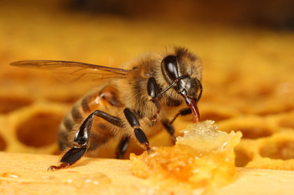
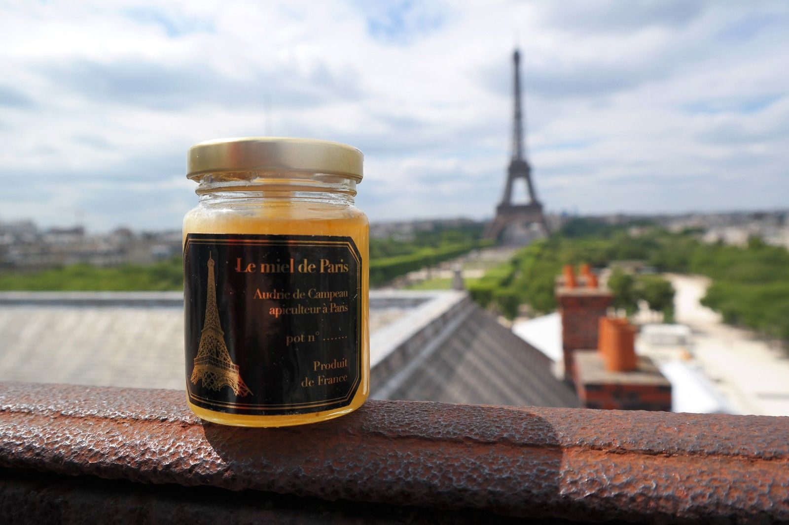

En ville, les températures plus clémentes, la diversité des plantations, les méthodes de culture sans engrais et sans pesticides, la multiplication des espaces verts, les plantations sur les terrasses, bords de fenêtres et cours séduisent les abeilles. Dans les jardins, les floraisons s’étalent du printemps à l’automne et les abeilles ont de quoi butiner une bonne partie de l’année. Une abeille butine 700 fleurs par jour dans un périmètre de trois kilomètres autour de la ruche. La plupart des végétaux ne peuvent se féconder sans le butinage des abeilles. Leur rôle est indispensable dans la nature. La présence des abeilles est un signe de bonne santé de notre environnement, leur préservation participe à la sauvegarde de notre planète.
Depuis plusieurs années, les ruches prospèrent en ville. Paris compte au recensement de 2015 près de 700 ruches et un patrimoine municipal de 143 ruches réunies dans 23 ruchers, gérés par des associations ou des particuliers apiculteurs dans le cadre de conventions d’occupation du domaine public. Ces apiculteurs se sont engagés à développer des ruchers pédagogiques afin d’informer le public sur la question des abeilles domestiques et plus largement sur les insectes pollinisateurs. La Maire de Paris a fixé comme objectif de renforcer la place de la nature à Paris, notamment à travers l’installation de ruches et la valorisation de leur miel, au cours de cette mandature. C’est l’objet du plan qui est proposé au Conseil de Paris, véritable stratégie en faveur des pollinisateurs, de l’abeille et des apiculteurs parisiens.
